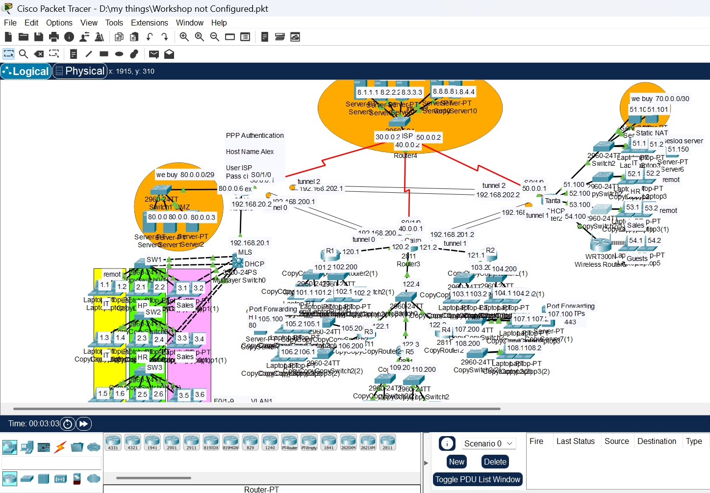
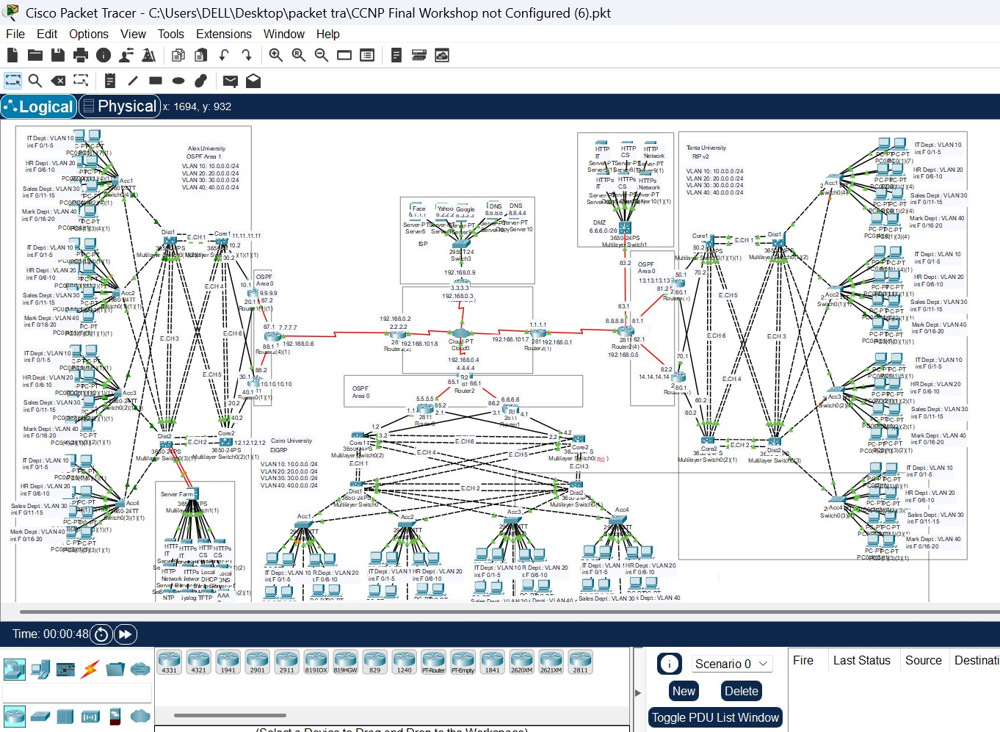
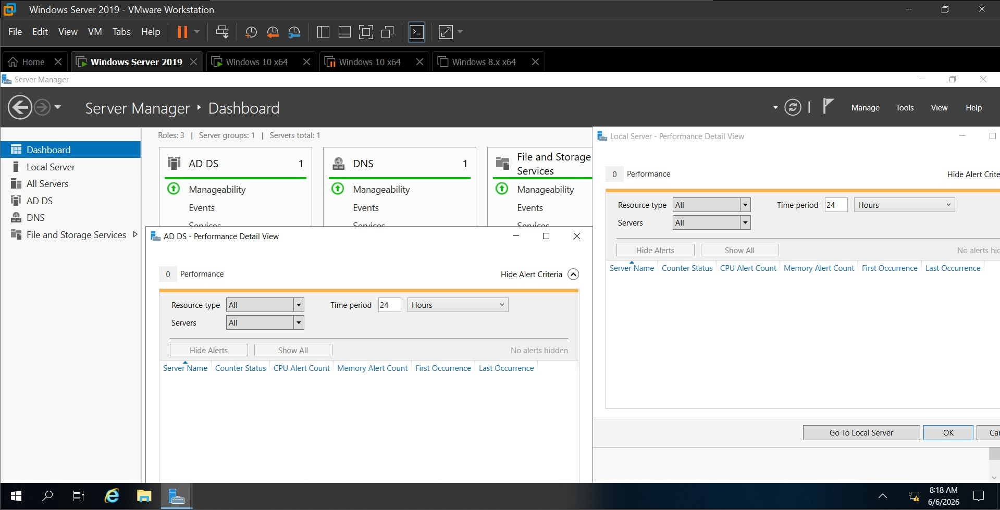

Real hands-on networking & IT practical work

Designed and implemented a complete enterprise network using Cisco Packet Tracer. Configured IP addressing, VLANs, DHCP, routing, and network connectivity between multiple departments.
Tools: Cisco Packet Tracer, VLANs, DHCP, Routing

Built an advanced enterprise network topology with dynamic routing protocols and troubleshooting scenarios to simulate real-world networking environments.
Tools: Cisco Packet Tracer, OSPF, EIGRP, Troubleshooting

Configured Windows Server Active Directory in VMware. Created users, groups, organizational units, and managed domain services in a virtual environment.
Tools: VMware, Windows Server, Active Directory